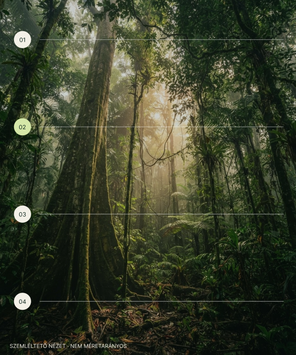
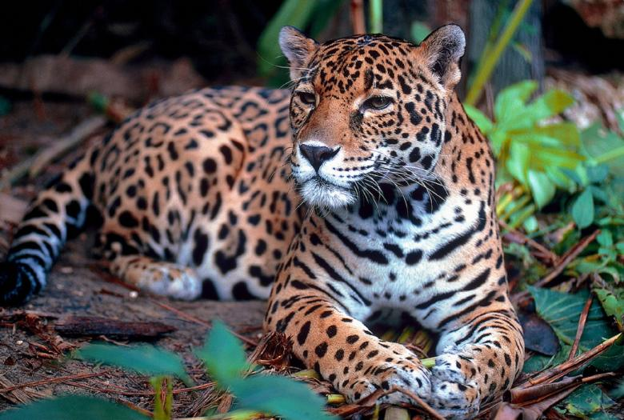
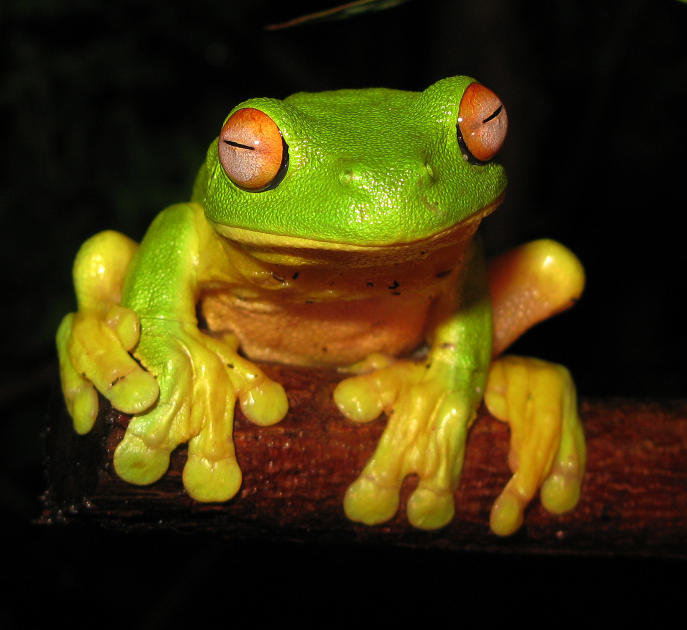
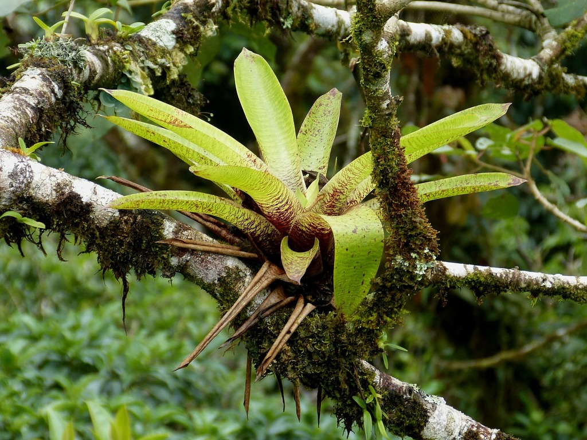

01
Óriásfák szintje
FÉNY ÉS SZÉLA legmagasabb fák kiemelkednek az erdőből.Koronájukat erős napsütés és szél éri; madarak és denevérek látogatják.
Lépj be az esőerdők világába. Ismerd meg az élet szövevényét,
amely a bolygónk jövőjét is alakítja.

03 / Függőleges utazás
Ugyanaz az erdő, egészen más világok. A fény és a nedvesség minden szinten más életfeltételeket teremt.
A legmagasabb fák kiemelkednek az erdőből.Koronájukat erős napsütés és szél éri; madarak és denevérek látogatják.
A levelek összefüggő tetőt alkotnak. Itt él sok mászó állat, és itt talál fényt számos fán lakó növény.
Kevés fény, párás levegő. Nagy levelek gyűjtik a szórt fényt; fiatal fák várnak egylombkoronában nyíló résre.
Gombák és apró élőlények bontják le az avart. A tápanyagok gyorsan visszakerülnek az élő rendszerbe.
A sokféleség nem puszta fajlista. Beporzás, magterjesztés, vadászat és lebontás: az erdő lakói egymás életfeltételeit is alakítják.

EMLŐS · AMERIKAPanthera onca
Rejtőzködő csúcsragadozó. A folyók mentén is vadászik, és fontos szerepe van a táplálékhálózat egyensúlyában.

KÉTÉLTŰ · KÖZÉP AMERIKAAgalychnis callidryas
Éjszakai életmódú béka, amely leveleken pihen. Szaporodása vízhez kötött: ebihalai a vízben fejlődnek.

NÖVÉNY · TRÓPUSI AMERIKABromeliaceae
Sok bromélia fákon él, nem élősködőként. Levélrózsájában összegyűlő víz apró élőlényeknek ad otthont.
Négy példa egy rendkívül gazdag világból. Nem minden esőerdőben ugyanazok a fajok élnek.